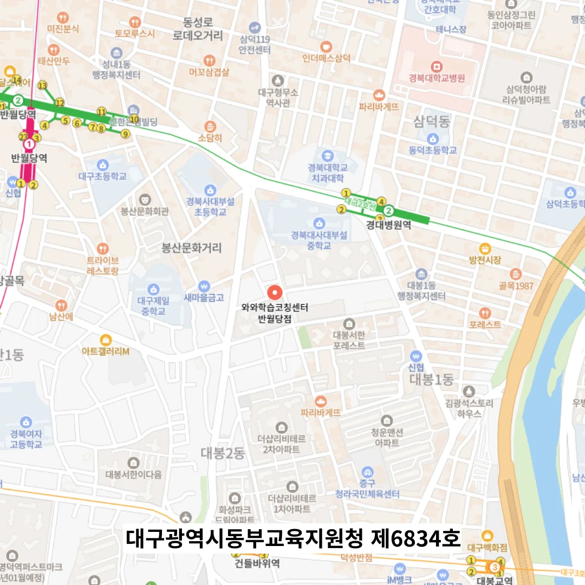

반월당 중1 단과학원
반월당 중1 단과학원
학습 계획표 역시 처음 만들어 놓은 그대로 고정되지 않고, 주기적으로 점검하며 수정하는 역동적인 도구로 기능해야 하며, 이를 통해 아이는 계획이 유연하게 조정될 수 있다는 사실을 배우고, 실패에 대한 두려움보다 성장에 대한 기대감을 가지게 됩니다. 예를 들어 “왜 평행사변형의 넓이는 밑변 × 높이인가요?”라는 질문에 대해 그림과 수식을 함께 사용해 답하게 하면, 단순한 암기가 아니라 원리에 대한 깊은 이해가 확인된다. 어려운 개념을 계속해서 이해하지 못할 때는 메타학습 관점에서 접근 전략을 바꾸어 보는 것이 좋습니다. 동시에 이러한 절차를 반복함으로써, 학생은 테스트를 두려워하는 평가가 아닌, 성장을 위한 통찰의 도구로 받아들이게 되고, 학습에 대한 통제력을 회복하게 된다. 특히 삼차방정식과 같은 상대적으로 복잡한 주제는 단순히 해를 구하는 공식을 외우는 데 그쳐서는 문제 해결 능력의 핵심 요소인 논리적 사고와 연결 고리를 놓치기 쉽고, 이는 시험에서 변형된 문제가 출제될 경우 즉각적인 위기를 초래한다.